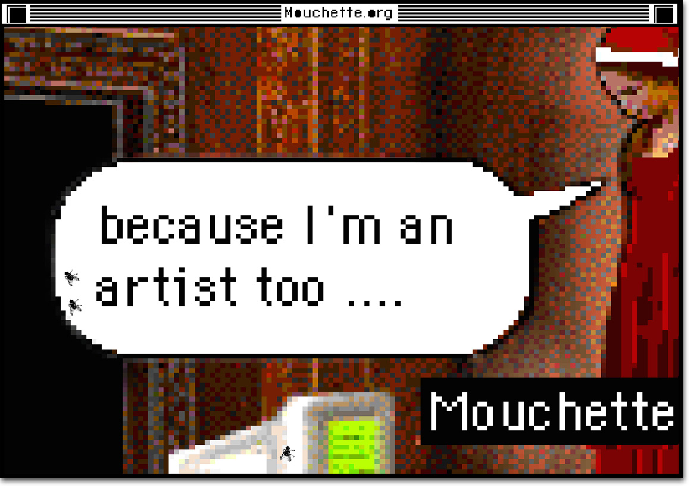

2016-ongoing
I have been collaboratng with Martine Neddam, the creator of Mouchette.org, to preserve and document this iconic piece of net art.
My contributions focused on:
Archiving User-Generated Content: Mouchette.org featured interactive elements allowing users to contribute content, such as comments and creative inputs. I worked on preserving this user-generated material to maintain the cultural and historical significance of the site.
Analyzing Archival Challenges: The project highlighted the difficulties of archiving dynamic, user-interactive digital art. I studied these challenges and helped implement methods to ensure the longevity and accessibility of the work.
Conserving parts of the site and preserving the database and other programmed elements.
Creating documentation interface of operating the complex work.
Cultural and Contextual Documentation: Beyond technical preservation, I contributed to understanding the cultural impact of Mouchette.org, including its themes of identity, anonymity, and the internet as a medium of artistic expression.
Knowledge Transfer: By documenting the preservation process, we made the project a learning tool for others working in the intersection of art and archives.
Recreating works of the site by productive archiving, imaginagion and the memories of the artist.
Mouchette.org is considered a landmark of early net art, and our's efforts are in the direktion of ensuring its survival and relevance in contemporary discourse.
